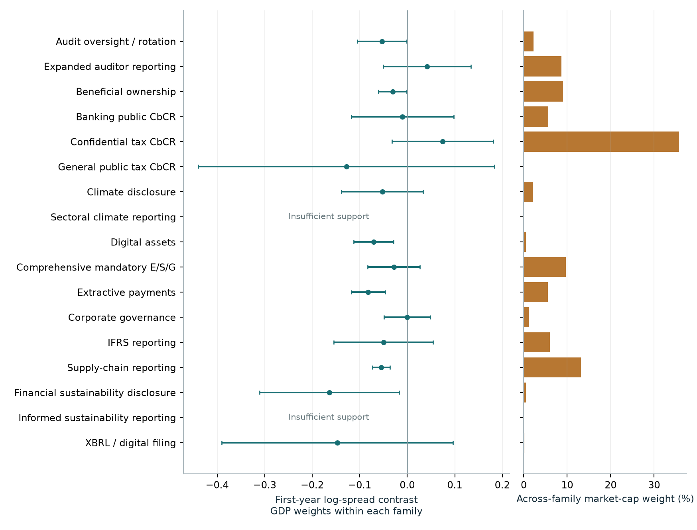
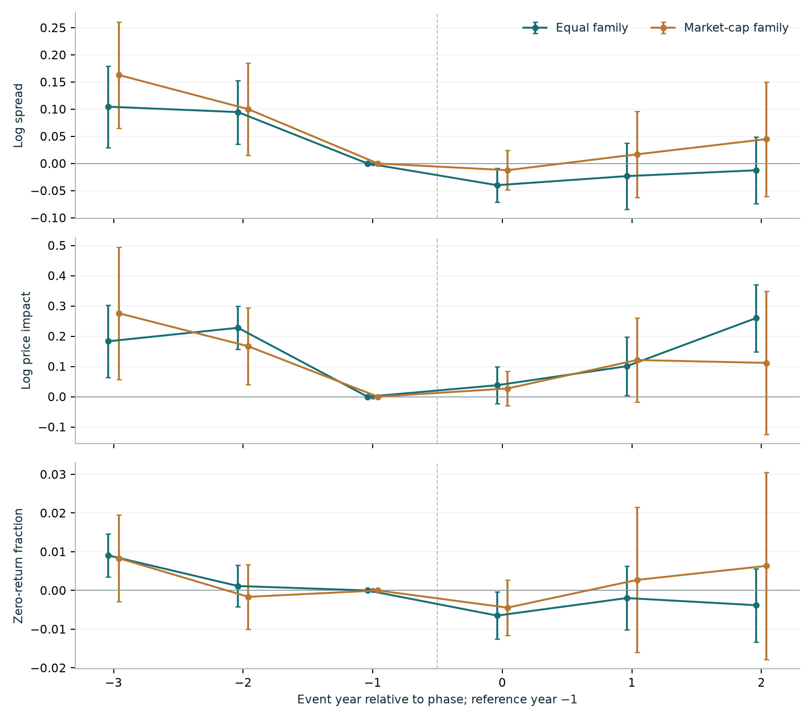

Equal family
−0.050First-year log-spread contrast across 15 families, with GDP weights within each family. Log price impact also falls by about 0.050.
GLOBAL REPORTING / CAPITAL MARKETS
Estimate each regulation family on its implementation calendar. Then combine supported estimates with equal-family and market-capitalisation weights.
First-year log-spread contrast across 15 families, with GDP weights within each family. Log price impact also falls by about 0.050.
First-year log-spread contrast across the same 15 families. The conditional interval includes zero; confidential tax CbCR receives 35.7% of exposure weight.
Common countries/cohorts over years −3 to +2. Several pretrend diagnostics reject, and price impact does not show a broad improvement.
These are conditional policy-exposure comparisons. Weight dependence, pre-policy differences, concurrent reforms and incomplete issuer histories prevent a general causal liquidity claim. Complete contrary and unsupported results remain available.
Known later implementers supply comparisons for each cohort. Country weights are lagged constant GDP; equal-country and sampled-market-cap alternatives are retained. Both cross-family schemes use common coverage across the three principal outcomes. Bank phases enter once, and the published ESG benchmark is excluded from aggregation.
| Outcome / coverage target | Equal family estimate [95% interval] | Market-cap family estimate [95% interval] | Holm p equal / cap |
|---|---|---|---|
| A. First year ·15 families Log spread | -0.050 [-0.085, -0.016] | 0.006 [-0.032, 0.044] | 0.022 / 1.000 |
| A. First year ·15 families Log price impact | -0.050 [-0.093, -0.008] | -0.027 [-0.098, 0.044] | 0.113 / 1.000 |
| A. First year ·15 families Zero returns | -0.006 [-0.010, -0.001] | -0.003 [-0.007, 0.001] | 0.050 / 0.892 |
| B. Years 0–2 ·10 families Log spread | -0.025 [-0.072, 0.022] | 0.017 [-0.054, 0.087] | 1.000 / 1.000 |
| B. Years 0–2 ·10 families Log price impact | 0.133 [0.052, 0.214] | 0.087 [-0.045, 0.219] | 0.006 / 1.000 |
| B. Years 0–2 ·10 families Zero returns | -0.004 [-0.011, 0.003] | 0.002 [-0.015, 0.018] | 1.000 / 1.000 |
GDP weights within families; both across-family schemes use identical family coverage within a target. Brackets are conditional country-sampling diagnostic intervals. Holm p-values adjust 12 principal coefficients; neither small p-values nor these intervals establish exogenous treatment. Zero returns are fractions. First-year and balanced targets have different countries/cohorts/families. Balanced joint lead p-values: spread 0.0005/0.0005; price impact 0.0005/0.0050; zero returns 0.0020/0.2325 (equal/cap). Complete alternative weights, support failures and fixed design matrix are online.
Inclusive first-year GDP-weighted family contrasts. Bars show conditional 95% country-sampling intervals; right panel shows sampled-quote market-capitalisation weights. Every attempted family is retained. Very small treated-country counts and common EU assignments limit independent-policy inference.

Ten-family common-support GDP-weighted comparison, with both requested across-family weights. Reference year−1 is zero by construction. Plotted bars are pointwise 95% conditional country-sampling intervals; simultaneous bands and joint lead diagnostics are in the data. Pre-policy differences are material. This sample differs from the inclusive first-year target.

The inclusive first-year target compares years g−1 and g, covering 15 families. The balanced target fixes support from g−3 through g+2, averages years 0–2 and covers ten families. Different horizons also use different countries/cohorts/families. Unsupported classes never enter as zero.
Market-cap weights sum sampled quote capitalisation in g−1 across each family’s supported treated cohorts. A market can appear for several regulations; this is a policy-exposure average, not a unique-firm investment portfolio. Shared country influence functions preserve covariance across the repeated exposures. Intervals are conditional country-sampling diagnostics. Common EU decisions do not become independent policy experiments.
Six fixed configurations include a one-year public-availability lag, fixed securities, exclusions for documented concurrent family events, independent choices only, and the full banking phase calendar. All three within-family weights and both cross-family weights are disclosed.
Balanced matrix ↗ · First-year matrix ↗ · Balanced family cells ↗ · First-year family cells ↗
| Economic regulation family | Country phases | Phase years | Treated markets |
|---|---|---|---|
| Audit oversight / rotation | 35 | 2003–2019 | 4 |
| Expanded auditor reporting | 36 | 2012–2021 | 19 |
| Beneficial ownership | 18 | 2016–2024 | 11 |
| Banking public CbCR | 28 | 2014–2014 | 16 |
| Confidential tax CbCR | 120 | 2016–2025 | 42 |
| General public tax CbCR | 28 | 2023–2025 | 1 |
| Climate disclosure | 6 | 2022–2025 | 2 |
| Sectoral climate reporting | 1 | 2025–2025 | Unsupported |
| Digital assets | 31 | 2018–2025 | 2 |
| Comprehensive mandatory E/S/G | 37 | 2002–2022 | 23 |
| Extractive payments | 9 | 2014–2023 | 5 |
| Corporate governance | 12 | 1993–2015 | 6 |
| IFRS reporting | 36 | 2005–2012 | 22 |
| Supply-chain reporting | 8 | 2012–2024 | 5 |
| Financial sustainability disclosure | 6 | 2024–2025 | 3 |
| Informed sustainability reporting | 1 | 2024–2024 | Unsupported |
| XBRL / digital filing | 4 | 2007–2011 | 1 |
Country phases are documented country-family implementation records through 2025, not independently verified earliest obligations or eligible-issuer counts. Banking is counted once at its initial public phase; full reporting is a sensitivity. Treated markets denote supported inclusive first-year GDP-weighted contrasts with common three-outcome coverage. Climate-sectoral and informed-sustainability classes lack support. Future schedules and the published ESG benchmark are excluded.
By 1 July 2014: names, activities, locations, turnover and FTE employees. The G-SII profit/tax submission in 2014 was confidential.
Article 89 ↗From 2015: annual country profits, taxes and subsidies join the initial fields. UK full disclosure was due by 31 December 2015, for the immediately preceding accounting period.
UK statutory instrument ↗The original CRR institution definition and national entity rules determine scope. UK holding companies are not themselves institutions; French law explicitly covers certain financial holding entities.
UK scope guidance ↗A listed parent, a regulated subsidiary and a branch are distinct roles. Group publication can satisfy some subsidiary obligations. Non-EU parents may be exposed through EU subsidiaries, so a country’s geography is not issuer eligibility.
The historical EBA lists contain 123 groups in 2014 and 105 in 2015:228 roster entries,143 distinct LEIs. They include listed parent groups and unlisted institutions. Norway is retained in the roster but is not automatically assigned the EU 2014/2015 dates. These lists are not a complete Article 89 filer census.
Loading historical groups…
| Year | Home country | Historical group | LEI | Coverage status |
|---|
24 EU institution quotes and 21 non-EU comparison-group quotes are linked locally. Complete 2011–2016 outcomes support 22 treated institutions in nine home countries and 20 comparison groups in five. Three treated-bank identities have dated-report or exchange-linked corroboration; 21 combine current direct LEI/ISIN evidence with historical census names and vendor validity intervals. Listed-parent and reorganisation gaps stay visible.
HSBC’s 2013 partial report was public on 30 June 2014; its 2014 full report on 30 June 2015. Deutsche Bank’s 2014 report was published 20 March 2015, Aareal’s 27 March 2015, and Nordea’s 12 February 2015. Annual-report dates are kept separate when complete public CbCR content has not been verified. These are observed publication dates, not certified first-ever disclosure dates.
50 reviewed equity-link candidates
| Bank / group | Home | Historical ISIN | LEI | Disposition | Identity evidence | Full report: actual public date |
|---|---|---|---|---|---|---|
| Erste Group Bank AG | AUT | AT0000652011 | PQOH26KWDF7CG10L6792 | included corroborated bank quote | dated issuer report ISIN | — |
| Aareal Bank AG | DEU | DE0005408116 | EZKODONU5TYHW4PP1R34 | included corroborated bank quote | dated issuer report ISIN | 2015-03-27 |
| Deutsche Bank AG | DEU | DE0005140008 | 7LTWFZYICNSX8D621K86 | included corroborated bank quote | dated issuer report ISIN | 2015-03-20 |
| Danske Bank A/S | DNK | DK0010274414 | MAES062Z21O4RZ2U7M96 | included corroborated bank quote | current LEI ISIN plus historical quote interval | — |
| Jyske Bank A/S | DNK | DK0010307958 | 3M5E1GQGKL17HI6CPN30 | included corroborated bank quote | current LEI ISIN plus historical quote interval | — |
| Sydbank A/S | DNK | DK0010311471 | GP5DT10VX1QRQUKVBK64 | included corroborated bank quote | current LEI ISIN plus historical quote interval | — |
| Credit Agricole SA | FRA | FR0000045072 | 969500TJ5KRTCJQWXH05 | included corroborated bank quote | current LEI ISIN plus historical quote interval | — |
| Societe Generale SA | FRA | FR0000130809 | O2RNE8IBXP4R0TD8PU41 | included corroborated bank quote | current LEI ISIN plus historical quote interval | — |
| Commerzbank AG | DEU | DE000CBK1001 | 851WYGNLUQLFZBSYGB56 | included corroborated bank quote | current LEI ISIN plus historical quote interval | — |
| Credito Emiliano SpA | ITA | IT0003121677 | 8156004B244AA70DE787 | included corroborated bank quote | current LEI ISIN plus historical quote interval | — |
| Mediobanca SpA | ITA | IT0000062957 | PSNL19R2RXX5U3QWHI44 | included corroborated bank quote | current LEI ISIN plus historical quote interval | — |
| Intesa Sanpaolo SpA | ITA | IT0000072618 | 2W8N8UU78PMDQKZENC08 | included corroborated bank quote | current LEI ISIN plus historical quote interval | — |
| Bank of Valletta plc | MLT | MT0000020116 | 529900RWC8ZYB066JF16 | included corroborated bank quote | current LEI ISIN plus historical quote interval | — |
| Alior Bank SA | POL | PLALIOR00045 | 259400QHDOZWMJ103294 | included corroborated bank quote | current LEI ISIN plus historical quote interval | — |
| Bank Handlowy w Warszawie SA | POL | PLBH00000012 | XLEZHWWOI4HFQDGL4793 | included corroborated bank quote | current LEI ISIN plus historical quote interval | — |
| Bank Ochrony Srodowiska SA | POL | PLBOS0000019 | MKP1B7E76TN04CD85Z79 | included corroborated bank quote | current LEI ISIN plus historical quote interval | — |
| PKO Bank Polski SA | POL | PLPKO0000016 | P4GTT6GF1W40CVIMFR43 | included corroborated bank quote | current LEI ISIN plus historical quote interval | — |
| Banco BPI SA | PRT | PTBPI0AM0004 | 3DM5DPGI3W6OU6GJ4N92 | included corroborated bank quote | current LEI ISIN plus historical quote interval | — |
| Banco Santander SA | ESP | ES0113900J37 | 5493006QMFDDMYWIAM13 | included corroborated bank quote | current LEI ISIN plus historical quote interval | — |
| CaixaBank SA | ESP | ES0140609019 | 7CUNS533WID6K7DGFI87 | included corroborated bank quote | current LEI ISIN plus historical quote interval | — |
| Banco de Sabadell SA | ESP | ES0113860A34 | SI5RG2M0WQQLZCXKRM20 | included corroborated bank quote | current LEI ISIN plus historical quote interval | — |
| Bankinter SA | ESP | ES0113679I37 | VWMYAEQSTOPNV0SUGU82 | included corroborated bank quote | current LEI ISIN plus historical quote interval | — |
| Skandinaviska Enskilda Banken AB | SWE | SE0000148884 | F3JS33DEI6XQ4ZBPTN86 | included corroborated bank quote | current LEI ISIN plus historical quote interval | — |
| Swedbank AB | SWE | SE0000242455 | M312WZV08Y7LYUC71685 | included corroborated bank quote | current LEI ISIN plus historical quote interval | — |
| HSBC Holdings plc | GBR | GB0005405286 | — | separate documented parent exposure | listed parent requires dated filer perimeter | 2015-06-30 |
| KBC Group NV | BEL | BE0003565737 | — | withheld parent to covered filer perimeter unresolved | listed parent requires dated filer perimeter | — |
| ING Groep NV | NLD | NL0000303600 | — | withheld parent to covered filer perimeter unresolved | listed parent requires dated filer perimeter | — |
| Lloyds Banking Group plc | GBR | GB0008706128 | — | withheld parent to covered filer perimeter unresolved | listed parent requires dated filer perimeter | — |
| Royal Bank of Scotland Group plc | GBR | GB00B7T77214 | — | withheld parent to covered filer perimeter unresolved | listed parent requires dated filer perimeter | — |
| Bank of America | USA | US0605051046 | — | included comparison bank quote | historical 2013 Compustat common CUSIP | — |
| Bank of New York Mellon | USA | US0640581007 | — | included comparison bank quote | historical 2013 Compustat common CUSIP | — |
| Citigroup | USA | US1729674242 | — | included comparison bank quote | historical 2013 Compustat common CUSIP | — |
| Goldman Sachs | USA | US38141G1040 | — | included comparison bank quote | historical 2013 Compustat common CUSIP | — |
| JPMorgan Chase | USA | US46625H1005 | — | included comparison bank quote | historical 2013 Compustat common CUSIP | — |
| Morgan Stanley | USA | US6174464486 | — | included comparison bank quote | historical 2013 Compustat common CUSIP | — |
| State Street | USA | US8574771031 | — | included comparison bank quote | historical 2013 Compustat common CUSIP | — |
| Wells Fargo | USA | US9497461015 | — | included comparison bank quote | historical 2013 Compustat common CUSIP | — |
| Mitsubishi UFJ Financial Group | JPN | JP3902900004 | — | included comparison bank quote | dated systemic bank list plus quote identity | — |
| Mizuho Financial Group | JPN | JP3885780001 | — | included comparison bank quote | dated systemic bank list plus quote identity | — |
| Sumitomo Mitsui Financial Group | JPN | JP3890350006 | — | included comparison bank quote | dated systemic bank list plus quote identity | — |
| Credit Suisse Group | CHE | CH0012138530 | — | included comparison bank quote | dated systemic bank list plus quote identity | — |
| UBS | CHE | CH0024899483 | — | included comparison bank quote | dated systemic bank list plus quote identity | — |
| Commonwealth Bank of Australia | AUS | AU000000CBA7 | — | included comparison bank quote | dated systemic bank list plus quote identity | — |
| National Australia Bank | AUS | AU000000NAB4 | — | included comparison bank quote | dated systemic bank list plus quote identity | — |
| Westpac Banking Corporation | AUS | AU000000WBC1 | — | included comparison bank quote | dated systemic bank list plus quote identity | — |
| Australia and New Zealand Banking Group | AUS | AU000000ANZ3 | — | included comparison bank quote | dated systemic bank list plus quote identity | — |
| Royal Bank of Canada | CAN | CA7800871021 | — | included comparison bank quote | dated systemic bank list plus quote identity | — |
| Bank of Montreal | CAN | CA0636711016 | — | included comparison bank quote | dated systemic bank list plus quote identity | — |
| Toronto-Dominion Bank | CAN | CA8911605092 | — | included comparison bank quote | dated systemic bank list plus quote identity | — |
| National Bank of Canada | CAN | CA6330671034 | — | included comparison bank quote | dated systemic bank list plus quote identity | — |
Public identities and evidence JSON ↗ · Twelve reviewed report examples ↗ · All 143 historical LEI dispositions ↗
The EBA register is a historical bank reference, not a national authorisation certificate or a complete Article 89 filer census. Most first-publication histories and several parent-to-filer links remain unresolved. European subsidiaries may expose non-EU comparison groups to the rule.
Koning et al.’s competition, learning, emulation and coercion logic guides lagged peer and external-dependence measures. Common EU waves are excluded as independent focal choices. An observed liquidity change is not inserted into earlier policy decisions.
| Panel | Weight or mechanism | A: Log spread B: Logit coef. | A: Log impact B: Raw p | A: Zero returns B: Broad Holm p |
|---|---|---|---|---|
| A. Matched-bank initial phase | Equal issuer | -0.712 | -0.246 | 0.004 |
| A. Matched-bank initial phase | GDP country mass | -0.092 | -0.226 | 0.009 |
| A. Matched-bank initial phase | Issuer market cap | -0.884 | -0.121 | 0.006 |
| B. Independent phase timing | Competition / trade peers | 0.458 | 0.088 | 1.000 |
| B. Independent phase timing | Learning / GDP growth | -0.409 | 0.560 | 1.000 |
| B. Independent phase timing | Emulation / language | 0.105 | 0.703 | 1.000 |
| B. Independent phase timing | External dependence | -0.720 | 0.000 | 0.142 |
Panel A: 22 treated institutions/9 EU home countries and 20 comparison bank groups/5 nonEU home countries, fixed 2011–2016 support; mean event-years 0–2 against 2013. One collective EU wave; outside-EU groups may have covered subsidiaries. Identity tiers and three-bank dated-report sensitivity are disclosed online. Panel B: pooled documented independent phase-timing logits, one mechanism per uncontrolled model with family-year strata. Continuous focal measures use one sample standard deviation. Broad Holm covers 433 stable focal coefficients across the fixed 1,330-design matrix. Timing associations are not identified diffusion channels.
Across 1,330 attempted designs, 433 stable focal coefficients remain; none survives the broad Holm correction. The bank identity and publication additions do not supply new independent country decisions. The complete timing and status matrix is refitted using the unchanged lagged legal input.
Full E/S/G requires all three topics for the relevant issuer population. Comply-or-explain is a required response; voluntary adoption of a practice is a different question. Climate governance does not establish a broad G mandate, and CSR spending does not establish full ESG reporting.
France’s remuneration and mandates start in FY2001; its NRE environmental/social paragraph applies from FY2002. The joint reviewed date is 2002.
Hong Kong general E/S disclosures: FY starts 2016. Singapore: FY ends from 31 December 2017. Ireland: FY starts from 1 August 2017. Fiscal boundaries are not observed public filing dates.
India’s initial top 100 differs from a later top 500 expansion. Argentina’s cited law is subnational. Canada, Pakistan and China are withheld from the full-topic class under the stated evidence definition.
| Regime | Information and audience | Covered population / timing |
|---|---|---|
| Reviewed mandatory E/S/G | Public topic-specific responses; comply-or-explain counts as required reporting. | 37 reviewed country phases. Listing, size, sector and materiality rules apply. These are not certified first-ever national ESG dates. |
| Bank public CbCR: initial | Names, activities, locations, turnover and employees. | Article 89 regulated institutions; public by July 2014. The 28 EU home-jurisdiction entries are one collective wave. |
| Bank public CbCR: full | Adds pretax profit, tax and public subsidies. | Annual full reporting from 2015; fiscal periods and national filer rules differ. Same collective wave; no EUR 750m threshold. |
| Confidential tax CbCR | Multinational tax information to tax administrations. | BEPS Action 13 thresholds, parent/surrogate/local filing roles. Not public banking CbCR. |
| Financial reporting (IFRS) | Public financial statements under applicable standards. | Listed/consolidated and national population rules; transitional phases differ. |
Dates identify the reviewed reporting phase and population, not an unverified global first-topic census. General multinational public tax reporting, extractive payments and climate-only rules remain separate classes in the companion register. No future schedule is included. All 18 class counts and country rows are online; 444 country-class phase entries through 2025 include coordinated bank home-geography entries, not 444 independent adoptions.
37 qualifying reviewed phases and four withheld assignments. These are reviewed regimes, not a complete census of the earliest national E, S and G duties. Some national original clauses remain unarchived; evidence grades are explicit.
41 country reviews
| Country / JSON | Reviewed phase | Boundary and basis | Covered population | Evidence and sources |
|---|---|---|---|---|
| Argentina · ARG | Withheld Author workbook: 2008 | Year precision · subnational law not national treatment | CABAlegal-domiciledbusinesses principallyoperatinginthecityfor>=1year; mandatoryBRSAonlywith>300workers AND revenueabove medium-enterprise thresholds; voluntaryforothers. | national primary or official implementation source excluded subnational scope argentina caba law ↗ |
| Australia · AUS | 2014 Author workbook: 2003 | 2014-07-01 · first full fiscal period start | ASX-listed entities subject to Listing Rule4.10.3 and third-edition governance recommendations; recommendation7.4 requires material economic/environmental/social risk exposure and management disclosure or an explanation. Materiality and listing exceptions apply. | national primary or official implementation source qualifying reviewed reporting phase asx 2014 transition ↗ asx es risks ↗ legacy asx code ↗ |
| Austria · AUT | 2017 Author workbook: 2016 | 2017-01-01 · first covered fiscal period start | NaDiVeG, UGB243b/267a; large public-interest companies/groups with >500 employees; size tests and consolidated subsidiary exemption. | national primary or official implementation source qualifying reviewed reporting phase nfrd aut law ↗ nfrd original ↗ nfrd gri country mapping ↗ |
| Belgium · BEL | 2017 Author workbook: 2009 | 2017-01-01 · first covered fiscal period start | Law3September2017; public-interest entities with >500 average employees and at least one financial-size test, including qualifying consolidated parents. | official summary or country mapping national clause not fully archived qualifying reviewed reporting phase nfrd bel law ↗ nfrd original ↗ nfrd gri country mapping ↗ |
| Bulgaria · BGR | 2017 Author workbook: 2016 | 2017-01-01 · first covered fiscal period start | Large public-interest entities with >500 employees; parent groups subject to consolidated statement, subsidiaries can use qualifying parent reporting. | official summary or country mapping national clause not fully archived qualifying reviewed reporting phase nfrd bgr law ↗ nfrd original ↗ nfrd gri country mapping ↗ |
| Canada · CAN | Withheld Author workbook: 2004 | 2004-03-30 · conditional financial disclosure not comprehensive ESG mandate | AIFfilersunderNI51-102; nonventure/reporting-issuerexemptions, materiality andfundamentalpolicyconditions matter. Environmentalfinancialeffects, employees andconditionalS/Epolicyinformation are not a universalrequirementtoreportorexplainallESGpolicies. | national primary or official implementation source excluded conditional financial disclosure canada aif 2004 ↗ canada aif effective ↗ |
| Chile · CHL | 2015 Author workbook: 2015 | 2015-12-31 · annual reference date | All Chilean openstockcorporations (sociedadesanonimasabiertas) underNCG385; mandatory questionnaire about adopted governance/CSR/sustainabledevelopment practices,referencing31December anddue31Marchnextyear; practiceadoptionitselfnotcompulsory. | national primary or official implementation source qualifying reviewed reporting phase chile 2015 385 ↗ chile 2015 launch ↗ |
| China · CHN | Withheld Author workbook: 2008 | Year precision · scoped CSR and internal control history | SSECorporateGovernanceSectorconstituents,overseaslistedforeign-shareissuersandfinancialcompaniesmustsubmitCSR/internal-controlreportswithFY2008annualreports; otherissuersencouraged. | national primary or official implementation source excluded full topic template not verified china 2008 scope ↗ china 2008 requirement ↗ |
| Cyprus · CYP | 2017 Author workbook: 2016 | 2017-01-01 · first covered fiscal period start | Large public-interest entities with >500 average employees; qualifying parent consolidated reporting and subsidiary exemption. | national primary or official implementation source qualifying reviewed reporting phase nfrd cyp law ↗ nfrd original ↗ nfrd gri country mapping ↗ |
| Denmark · DNK | 2016 Author workbook: 2016 | 2016-01-01 · first covered fiscal period start | Reporting classD entities with >=500employees fromFY2016; large classC and smaller classD enter the expanded four-topic requirements fromFY2018. PriorCSR2009/human-rights and climate2013 duties remain distinct. | national primary or official implementation source qualifying reviewed reporting phase denmark 2015 law ↗ nfrd gri country mapping ↗ |
| Egypt · EGY | 2022 Author workbook: not in workbook | Year precision · first covered financial year end year | AllEGX-listedcompaniesforESGunderResolution108/2021; NBFIswithissuedcapitalornetequity>=EGP100munder107/2021. AdditionalTCFDfor>=EGP500m;phase-inquarterlyprogressfrom1January2022. | national primary or official implementation source qualifying reviewed reporting phase egypt 2021 resolution scope ↗ |
| Estonia · EST | 2017 Author workbook: 2016 | 2017-01-01 · first covered fiscal period start | Public-interest entities (listed companies, credit institutions, insurers) with >500 employees; country-specific Accounting Act scope. | official summary or country mapping national clause not fully archived qualifying reviewed reporting phase nfrd est law ↗ nfrd original ↗ nfrd gri country mapping ↗ |
| Finland · FIN | 2017 Author workbook: 2016 | 2017-12-31 · first covered fiscal year end | Large public-interest reporting entities with >500 average employees; group non-financial statement can cover qualifying subsidiaries. | national primary or official implementation source qualifying reviewed reporting phase nfrd fin law ↗ nfrd original ↗ nfrd gri country mapping ↗ |
| France · FRA | 2002 Author workbook: 2001 | 2002-01-01 · first covered fiscal period start | French companies whose securities are admitted to a regulated market for environmental/social paragraph; director remuneration and mandates under the first three paragraphs apply fromFY2001. | national primary or official implementation source qualifying reviewed reporting phase france nre decree ↗ |
| Germany · DEU | 2017 Author workbook: 2016 | 2017-01-01 · first covered fiscal period start | Large capital-market-oriented companies with >500 average employees; separate rules include credit institutions and insurers, with group/parent exemptions. | national primary or official implementation source qualifying reviewed reporting phase nfrd deu scope ↗ nfrd original ↗ nfrd gri country mapping ↗ |
| Greece · GRC | 2016 Author workbook: 2006 | 2016-07-07 · first covered fiscal year end national early implementation | Large public-interest entities with >500 employees under Law4403/2016; earlier environmental/employee KPI duties under3487/2006 are a distinct, narrower history. | national primary or official implementation source qualifying reviewed reporting phase nfrd grc law ↗ nfrd original ↗ nfrd gri country mapping ↗ |
| Hong Kong · HKG | 2016 Author workbook: 2015 | 2016-01-01 · first covered fiscal period start | Main Board and GEM listed issuers within the HKEX ESG reporting rules; annual E/S general disclosures on comply-or-explain; separate Corporate Governance Code. Environmental KPIs become comply-or-explain forFYstarts1January2017. | national primary or official implementation source qualifying reviewed reporting phase hkex esg 2016 ↗ hkex 2019 review ↗ |
| Hungary · HUN | 2017 Author workbook: 2016 | 2017-01-01 · first covered fiscal period start | Public-interest entities with >500 employees and turnover>HUF12billion or assets>HUF6billion; consolidated parent scope and qualifying exemptions. | official summary or country mapping national clause not fully archived qualifying reviewed reporting phase nfrd hun law ↗ nfrd original ↗ nfrd gri country mapping ↗ |
| India · IND | 2012 Author workbook: 2015 | 2012-12-31 · first covered fiscal year end | Top100 listed companies by BSE/NSE market capitalization as at31March2012; other companies initially voluntary. Subsequent LODR34(2)(f) expands top 500; top 1000 and BRSR phases remain distinct. | national primary or official implementation source qualifying reviewed reporting phase india brr 2012 scope ↗ india brr 2015 ↗ |
| Indonesia · IDN | 2012 Author workbook: 2012 | 2012-12-31 · first covered fiscal year end | Issuers and public companies governed by Bapepam-LKX.K.6; annual report includes corporate governance and CSR covering environment, labour/health/safety, community and product responsibility. Natural-resource CSR spending law is separate. | national primary or official implementation source qualifying reviewed reporting phase indonesia 2012 law ↗ |
| Ireland · IRL | 2017 Author workbook: 2016 | 2017-08-01 · first covered fiscal period start | Large ineligible/public-interest entities with >500 employees, and qualifying holding-company groups; apply original2017scope and separately recorded2018amendment. | national primary or official implementation source qualifying reviewed reporting phase nfrd irl law ↗ nfrd original ↗ nfrd gri country mapping ↗ |
| Italy · ITA | 2017 Author workbook: 2016 | 2017-01-01 · first covered fiscal period start | Public-interest entities with >500 employees and assets>EUR20m or revenue>EUR40m; corresponding consolidated groups; qualifying subsidiary exemption. | national primary or official implementation source qualifying reviewed reporting phase nfrd ita law ↗ nfrd original ↗ nfrd gri country mapping ↗ |
| Malaysia · MYS | 2016 Author workbook: 2007 | 2016-12-31 · first covered fiscal year end | Main Market issuers with marketcap>=RM2bn at31December2015 (or relevant2016listing date), followed by other Main Market issuers forFYE>=31December2017; ACEphaseFYE>=31December2018. Listed REITmanagement-company rules also apply. | national primary or official implementation source qualifying reviewed reporting phase malaysia sustainability 2015 ↗ |
| Malta · MLT | 2017 Author workbook: 2016 | 2017-01-01 · first covered fiscal period start | Large listed/public-interest entities, >500employees and assets>EUR20m or turnover>EUR40m; group/parent exemptions and listing rules. | official summary or country mapping national clause not fully archived qualifying reviewed reporting phase nfrd mlt notice ↗ nfrd original ↗ nfrd gri country mapping ↗ |
| Netherlands · NLD | 2017 Author workbook: 2016 | 2017-01-01 · first covered fiscal period start | Large public-interest legal entities with >500employees, including qualifying consolidated parent groups; subsidiary exemption. | national primary or official implementation source qualifying reviewed reporting phase nfrd nld law ↗ nfrd original ↗ nfrd gri country mapping ↗ |
| Norway · NOR | 2013 Author workbook: 2013 | Year precision · first covered financial year | Large enterprises under the Norwegian Accounting Act, including public limited companies and listed accounting entities and designatedlarge entities; policy, action, results or no-policy disclosure on human rights, labour/social, environment and anti-corruption. | national primary or official implementation source qualifying reviewed reporting phase norway csr 2013 ↗ norway 2013 scope ↗ |
| Pakistan · PAK | Withheld Author workbook: 2009 | 2009-07-01 · CSR activity reporting fiscal period start | Allpubliccompanies underCSRGeneralOrder2009; descriptiveandmonetarydisclosureofCSRactivitiesundertaken. CSRvoluntaryguidelinesandcorporategovernanceareseparate. | national primary or official implementation source excluded CSR activity only pakistan csr order ↗ |
| Peru · PER | 2016 Author workbook: 2015 | Year precision · first covered annual report year | Issuers with securities in the publicsecuritiesmarketregister subject toannualreport requirements; issuers withonlyMAVsecurities exempt. Sustainabilityresponse supplements existing corporate-governance report. | national primary or official implementation source qualifying reviewed reporting phase peru sustainability 2016 ↗ peru official issuer2016 ↗ peru official annual2016 ↗ |
| Philippines · PHL | 2019 Author workbook: 2011 | Year precision · first covered annual report year | Philippine publicly-listed companies; sustainability template attached toSECForm17-A, or qualifying existing report/link; firstthreeimplementationyearscomply-or-explain. The referenced2011CSRAct is a bill, not this reporting mandate. | national primary or official implementation source qualifying reviewed reporting phase philippines 2019 mc4 ↗ philippines 2011 bill ↗ |
| Poland · POL | 2017 Author workbook: 2016 | 2017-01-01 · first covered fiscal period start | Specified public-interest entities with >500FTE and assets>PLN85m or net revenue>PLN170m in current and preceding year; consolidated parent thresholds and exemptions. | national primary or official implementation source qualifying reviewed reporting phase nfrd pol law ↗ nfrd original ↗ nfrd gri country mapping ↗ |
| Portugal · PRT | 2017 Author workbook: 2010 | 2017-01-01 · first covered fiscal period start | Large public-interest companies/groups with >500employees; statutory financial-size tests and consolidated subsidiary exemption. | official summary or country mapping national clause not fully archived qualifying reviewed reporting phase nfrd prt law ↗ nfrd original ↗ nfrd gri country mapping ↗ |
| Romania · ROU | 2017 Author workbook: 2016 | 2017-01-01 · first covered fiscal period start | Public-interest entities with >500employees under Ministry of Public Finance Order1938/2016; bank/insurance implementing instruments are separate scope records. | official summary or country mapping national clause not fully archived qualifying reviewed reporting phase nfrd gri country mapping ↗ nfrd original ↗ nfrd gri country mapping ↗ |
| Singapore · SGP | 2017 Author workbook: 2016 | 2017-12-31 · first covered fiscal year end | SGX-listed issuers subject to711A/711B: materialE/S/G factors, policies/practices/performance, targets, framework and boardstatement; first report has up to12months afterFYend. Mainboard/Catalisthistoricalrules. | national primary or official implementation source qualifying reviewed reporting phase sgx 2016 launch ↗ sgx historical guide ↗ |
| Slovenia · SVN | 2017 Author workbook: 2017 | 2017-01-01 · first covered fiscal period start | Public-interest entities with >500employees and qualifying parent groups; statement and group exemption under ZGD-1J. | official summary or country mapping national clause not fully archived qualifying reviewed reporting phase nfrd svn law ↗ nfrd original ↗ nfrd gri country mapping ↗ |
| South Africa · ZAF | 2010 Author workbook: 2010 | 2010-03-01 · first covered fiscal period start | JSE-listed issuers subject to amended listingrequirements: applyKingIII or explain; integrated financial/sustainabilityreporting and boardresponsibilities. EarlierKingII/otherdisclosures remain distinct. | national primary or official implementation source qualifying reviewed reporting phase jse 2010 rules ↗ |
| Spain · ESP | 2017 Author workbook: 2012 | 2017-01-01 · first covered fiscal period start | Public-interest companies/groups with >500employees and large-size conditions under RDL18/2017; later Law11/2018 expansion is separate. | national primary or official implementation source qualifying reviewed reporting phase nfrd esp law ↗ nfrd original ↗ nfrd gri country mapping ↗ |
| Sweden · SWE | 2017 Author workbook: 2016 | 2017-01-01 · first covered fiscal period start | All company types satisfying at least two of >250employees, assets>SEK175m, turnover>SEK350m in each of two preceding years; not limited to listed PIEs; qualifying group exemption. | official summary or country mapping national clause not fully archived qualifying reviewed reporting phase nfrd swe original ↗ nfrd original ↗ nfrd gri country mapping ↗ |
| Taiwan (China) · TWN | 2014 Author workbook: 2019 | Year precision · reviewed rule adoption year first reports for preceding year | TWSElisted food/chemical/financial-insurance companies, companies with food-and-beverage revenue>=50%, or commonstockcapital>=NTD10bn based onlatestfinancialreport. Latercapitalbands andTPExrules areseparate. GRIcoreprofile and materialE/S disclosures, with sectordetails/assurance. | national primary or official implementation source qualifying reviewed reporting phase twse 2014 rules ↗ |
| Thailand · THA | 2021 Author workbook: not in workbook | 2021-12-31 · first covered fiscal period end | Listedissuers required tofileForm56-1OneReport; annualregistration/reportformsconsolidated,withESGpolicies/goals/performance,GHGandhumanrights. Filingwithin3months;offeringstatementsfrom1January2022areseparate. | national primary or official implementation source qualifying reviewed reporting phase thailand 2021 one report ↗ |
| Turkey · TUR | 2020 Author workbook: 2014 | Year precision · first covered data year reported 2021 | Public companies in CorporateGovernanceCommuniqueII17.1article1(5)scope; relevantlistedmarketexceptionsapply; newIPOs report the followingyear data. ESGpracticesvoluntary but compliance/noncompliance reporting is compulsory. | national primary or official implementation source qualifying reviewed reporting phase turkey esg framework ↗ turkey esg scope ↗ |
| United Kingdom · GBR | 2007 Author workbook: 2013 | 2007-10-01 · first covered fiscal period start | UKquotedcompanies underCompaniesAct2006section417enhancedbusinessreview; materialenvironmental,employee,social/communityinformation or omittedkindstatement; statutorydirector/governancereporting applies. The2013strategic/GHG/genderamendment is separate. | national primary or official implementation source qualifying reviewed reporting phase uk business review 2007 ↗ uk strategic 2013 ↗ uk original 2006 417 ↗ |
Eight pages, three tables and two figures. The argument follows the economic sequence in the reference-paper analysis: information problem, institutional scope, measurement, principal magnitudes, identification and independent diffusion.
Read the paper ↗Investors face reporting requirements that differ in their information content, audience and covered population. Comprehensive sustainability reports, bank tax disclosures, confidential multinational tax returns and digital financial filings can therefore affect the information environment through different channels. We ask whether liquidity changes around these rules and whether earlier foreign implementation helps explain subsequent domestic policy choices.
Following the economic sequence in Krueger et al. (2023), we first define reporting obligations, establish the market sample and examine complementary liquidity outcomes. We then use the competition, learning, emulation and coercion framework in Koning et al. (2018) to study implementation. The two parts answer different questions: a market association around an EU rule is not evidence that national policymakers independently learned from foreign benefits.
Our market panel contains 1,055,142 security-years, 99,100 quote identifiers and 90 jurisdictions during 2000–2025. We estimate a separate staggered cohort-time comparison for each economic regulation family and give both equal and market-capitalisation weights across supported families. Banking enters once. Its initial and full reporting phases are not counted as separate equally weighted policies.
The central empirical distinction is the weighting target. First-year equal-family estimates indicate lower spreads and price impact, whereas market-capitalisation-weighted estimates do not establish a broad improvement. The balanced longer-window comparison rejects several pretrend diagnostics. These results favour a differentiated account of reporting environments over an unrestricted average benefit. The extension beyond ESG is the classification and explicit aggregation of heterogeneous obligations; the broader country-market analysis does not reproduce an eligible-firm design.
Public reporting can reduce adverse selection when it supplies credible facts that investors otherwise obtain unevenly. Repeated or immaterial disclosure may add little information, while compliance costs, enforcement differences and concurrent reforms can offset benefits. Narrower spreads and lower price impact are predicted when incremental public information matters. A higher zero-return fraction generally indicates less active price adjustment.
Comprehensive mandatory E/S/G reporting requires a response on all three topics; the last topic determines the joint date. Comply-or-explain still requires a response. CSR spending or a climate-only requirement does not establish comprehensive E/S/G coverage. We retain 37 qualifying reviewed phases from 41 country reviews; earliest separate national topic histories are not complete. Krueger et al. use voluntary earnings guidance as an information-environment proxy, not voluntary ESG disclosure.
Public and confidential CbCR have different audiences. Banking Article 89 reporting initially makes activities, locations, turnover and employment public in 2014; the full annual phase adds profit, taxes and subsidies from 2015. The initial 2014 profit-and-tax submission by globally systemic institutions was confidential. BEPS Action 13 reports go to tax authorities, while general public income-tax reporting concerns a separate multinational regime. Banking coverage does not use the general EUR 750 million threshold.
Eligibility attaches to institutions and their consolidation perimeters. A listed holding company is not automatically the regulated bank. The June 2013 EBA register distinguishes CRD credit institutions from EEA branches and expressly recommends national-register checks. We use it to corroborate bank identities and retain parent and reorganisation gaps. Table 1 lists only implemented phases through 2025, with separate estimation support; it contains no future schedules.
Annual outcomes are the log median relative quoted spread, log median Amihud price impact and the fraction of observed valid trading-day returns that equal zero. Major primary home equities receive duplicate, delisting, stale-price and extreme-return screens; each outcome requires at least 120 valid observations. The two logged proxies use annual 1/99 winsorisation. The calendar-year and observed-return denominator differ from the reference paper’s fiscal-year and potential-day definitions. At least 30 valid securities are required for each country-year outcome.
For family f, cohort g and year t, we subtract the weighted mean change from g−1 among known later implementers from the change among countries implementing in g. Controls remain untreated through the endpoint; unknown histories never become never-treated controls. GDP in g−1 supplies the principal within-family weights. Equal-country and sampled-market-cap weights are disclosed alternatives. Cohort weights equal their eligible treated economic mass and remain fixed across event time.
We report two coequal coverage targets. The inclusive first-year contrast uses g−1 and g, supporting 15 families. The balanced comparison fixes countries and cohorts over g−3 through g+2 and averages years 0–2, supporting ten. The wider endpoint was added to address panel-boundary exclusions before inspecting its coefficients; its design amendment is retained. Differences between the two targets combine horizon and sample changes and cannot be read as a single dynamic path.
Across families, equal weights assign 1/F to each supported family. Market-capitalisation weights use each family’s summed sampled-quote capitalisation in g−1 across supported treated cohorts. Both use the same family set across the three core outcomes. The same market can contribute to several regulations: these are policy-exposure weights, not a unique-issuer investment portfolio. Unsupported families are listed rather than entered as zero.
Shared country influence functions and 1,999 common Rademacher draws preserve covariance from countries appearing in several cohorts and families. Intervals are conditional country-sampling diagnostics, not independent-policy randomisation inference. We report joint lead tests, simultaneous event bands, an EU-as-one-block diagnostic and Holm adjustment across 12 coequal principal coefficients. Parallel trends, no anticipation, no interference and absence of unaccounted concurrent reforms remain substantive requirements. Timing shifts, fixed-security samples, independent-choice samples and concurrent-policy exclusions are retained.
Table 2 presents both requested cross-family weightings. In the inclusive first-year comparison, equal-family log-spread and log-impact estimates are −0.050 and −0.050, approximately 4.9% relative declines. The zero-return fraction declines by 0.00575, or 0.575 percentage points. With market-capitalisation weights across the same 15 families, the corresponding estimates are 0.006,−0.027 and −0.00333. Their conditional intervals include zero. Confidential tax CbCR receives 35.7% of first-year market-cap weight; weighting changes the policy exposure being summarised.
Figure 1 displays every attempted family, including the two unsupported classes. The balanced years 0–2 estimates cover ten families: equal-family log spread is −0.025 and log impact is 0.133; market-capitalisation-weighted values are 0.017 and 0.087. Figure 2 reports the common-support event profiles. Joint lead diagnostics reject for both log-spread aggregates and several other outcomes. The positive balanced price-impact estimate and the pretrends prevent a causal generalisation from the favourable first-year equal-family signs.
Table 3 Panel A examines matched institutions rather than country-market averages. We corroborate 24 EU institution quotes and 21 comparison-group quotes; complete 2011–2016 outcomes leave 22 treated banks in nine home countries and 20 comparison banks in five. Initial-phase mean years 0–2 log-spread contrasts are −0.712 with equal-issuer weights,−0.092 with country-GDP mass allocated across sampled banks, and −0.884 with issuer market-cap weights. Price impact declines, but zero-return fractions rise. These are one-common-wave comparisons subject to pretrends, European banking reforms and possible exposure of comparison groups through EU subsidiaries.
Historical report or exchange-linked identities corroborate three treated banks. The other 21 institution links combine current direct LEI/ISIN evidence with historical quote intervals and the 2013 bank register; they do not certify every historical legal relationship. We report the three-bank identity sensitivity separately. Actual publication is established for Deutsche Bank 2014 on 20 March 2015, Aareal 2014 on 27 March 2015 and HSBC 2014 on 30 June 2015; HSBC’s 2013 partial report was published 30 June 2014. Nordea’s full 2014 report was published 12 February 2015, but its home-equity identifier remains unresolved. The matched observed-date sensitivity has three publishers, including HSBC’s listed parent, and is not a complete staggered filing-date panel.
Following Koning et al., competition uses earlier implementation among export-pattern peers; learning uses prior outcomes among geographic neighbours; emulation uses language, legal-origin or IGO peers; and external dependence uses IMF-credit and aid measures. Every signal precedes the focal year. Family-year strata and country-clustered covariance accompany timing logit and status-model alternatives; controlled specifications include lagged income, growth and trade. The incomplete ledger identifies first recorded phases, not certified first-ever adoption.
Table 3 Panel B reports four focal timing associations. Trade-peer exposure changes sign with controls, and the negative external-dependence coefficient opposes a positive coercion prediction. Across 1,330 attempted designs, 433 stable focal coefficients remain; none passes the broad Holm correction. The bank-identity additions create no new independent national policy choices, so the lagged nonbank input is unchanged and the full matrix is refitted. We do not insert a later estimated liquidity benefit into an earlier policy decision.
Liquidity associations differ across reporting rules and across the economic weights used to combine them. First-year equal-family estimates are favourable, while market-cap weights and balanced pretrend checks limit a general liquidity interpretation. The matched-bank study supplies issuer evidence with explicit legal-identity and filing-date boundaries. The diffusion tests do not establish the proposed mechanisms. A causal account requires more complete eligible-issuer histories and policy variation that separates reporting from concurrent reforms.
All 44 bank and method-source responses have a disposition: 29 targeted content reviews, rejected or unavailable responses, download wrappers and archive context. Original retrieved documents stay in the local project. The prior 41-country legal review and 22 pages of Chilean OCR remain available.
National authorisation and consolidation histories, complete first-publication dates, some original commencement clauses, earliest separate E/S/G duties and global issuer thresholds remain incomplete. Every historical bank LEI has a match disposition; “no corroborated quote” does not mean unlisted or legally uncovered. Licensed vendor quote identifiers and issuer observations remain local.
Loading source catalogue…
| Country / class | Rule / event | Recorded date | Source | Record |
|---|